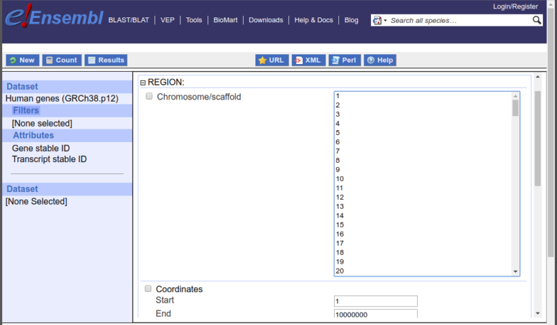

Accessing Ensembl annotation with biomaRt
Mike L. Smith, Steffen Durinck, Wolfgang Huber
Source:vignettes/accessing_ensembl.Rmd
accessing_ensembl.RmdIntroduction
Accessing the data available in Ensembl is by far most frequent use of the biomaRt package. With that in mind biomaRt provides a number of functions that are tailored to work specifically with the BioMart instances provided by Ensembl. This vignette details this Ensembl specific functionality and provides a number of example usecases that can be used as the basis for specifying your own queries.
Selecting an Ensembl BioMart database and dataset
Every analysis with biomaRt starts with selecting a BioMart database to use. The commands below will connect us to Ensembl’s most recent version of the Human Genes BioMart.
library(biomaRt)
ensembl <- useEnsembl(biomart = "genes", dataset = "hsapiens_gene_ensembl")If this your first time using biomaRt ,
you might wonder how to find the two arguments we supplied to the
useEnsembl() command. This is a two step process, but once
you know the setting you need you can use the version shown above as a
single command. These initial steps are outlined below.
Step1: Identifying the database you need
The first step is to find the names of the BioMart services Ensembl
is currently providing. We can do this using the function
listEnsembl(), which will display all available Ensembl
BioMart web services. The first column gives us the name we should
provide to the biomart argument in
useEnsembl(), and the second gives a more comprehensive
title for the dataset along with the Ensembl version.
## biomart version
## 1 genes Ensembl Genes 115
## 2 mouse_strains Mouse strains 115
## 3 snps Ensembl Variation 115
## 4 regulation Ensembl Regulation 115The useEnsembl() function can now be used to connect to
the desired BioMart database. The biomart argument should
be given a valid name from the output of listEnsembl(). In
the next example we will select the main Ensembl mart, which provides
access to gene annotation information.
ensembl <- useEnsembl(biomart = "genes")If we print the current ensembl object, we can see that
the ENSEMBL_MART_ENSEMBL database 1 has been selected, but
that no dataset has been chosen.
ensembl## Object of class 'Mart':
## Using the ENSEMBL_MART_ENSEMBL BioMart database
## No dataset selected.Step 2: Choosing a dataset
BioMart databases can contain several datasets. For example, within
the Ensembl genes mart every species is a different dataset. In the next
step we look at which datasets are available in the selected BioMart by
using the function listDatasets(). Note: here we use
the function head() to display only the first 5 entries as
the complete list has many entries.
datasets <- listDatasets(ensembl)
head(datasets)## dataset description version
## 1 abrachyrhynchus_gene_ensembl Pink-footed goose genes (ASM259213v1) ASM259213v1
## 2 acalliptera_gene_ensembl Eastern happy genes (fAstCal1.3) fAstCal1.3
## 3 acarolinensis_gene_ensembl Green anole genes (AnoCar2.0v2) AnoCar2.0v2
## 4 acchrysaetos_gene_ensembl Golden eagle genes (bAquChr1.2) bAquChr1.2
## 5 acitrinellus_gene_ensembl Midas cichlid genes (Midas_v5) Midas_v5
## 6 amelanoleuca_gene_ensembl Giant panda genes (ASM200744v2) ASM200744v2The listDatasets() function will return every available
option, however this can be unwieldy when the list of results is long,
involving much scrolling to find the entry you are interested in. biomaRt
also provides the functions searchDatasets() which will try
to find any entries matching a specific term or pattern. For example, if
we want to find the details of any datasets in our ensembl
mart that contain the term ‘hsapiens’ we could do the
following:
searchDatasets(mart = ensembl, pattern = "hsapiens")## dataset description version
## 80 hsapiens_gene_ensembl Human genes (GRCh38.p14) GRCh38.p14To use a dataset we can update our Mart object using the
function useDataset(). In the example below we choose to
use the hsapiens dataset.
ensembl <- useDataset(dataset = "hsapiens_gene_ensembl", mart = ensembl)As mentioned previously, if the dataset one wants to use is known in advance i.e. you’ve gone through this process before, we can select a both the database and dataset in one step:
ensembl <- useEnsembl(biomart = "genes", dataset = "hsapiens_gene_ensembl")Ensembl mirror sites
To improve performance Ensembl provides several mirrors of their site
distributed around the globe. When you use the default settings for
useEnsembl() your queries will be directed to your closest
mirror geographically. In theory this should give you the best
performance, however this is not always the case in practice. For
example, if the nearest mirror is experiencing many queries from other
users it may perform poorly for you. You can use the mirror
argument to useEnsembl() to explicitly request a specific
mirror.
ensembl <- useEnsembl(
biomart = "ensembl",
dataset = "hsapiens_gene_ensembl",
mirror = "useast"
)Values for the mirror argument are: useast,
asia, and www.
Using archived versions of Ensembl
It is possible to query archived versions of Ensembl through biomaRt, so you can maintain consistent annotation throughout the duration of a project.
biomaRt
provides the function listEnsemblArchives() to view the
available Ensembl archives. This function takes no arguments, and
produces a table containing the name and version number of the available
archives, the date they were first released, and the URL where they can
be accessed.
## name date url version current_release
## 1 Ensembl GRCh37 Feb 2014 https://grch37.ensembl.org GRCh37
## 2 Ensembl 115 Sep 2025 https://sep2025.archive.ensembl.org 115 *
## 3 Ensembl 114 May 2025 https://may2025.archive.ensembl.org 114
## 4 Ensembl 113 Oct 2024 https://oct2024.archive.ensembl.org 113
## 5 Ensembl 112 May 2024 https://may2024.archive.ensembl.org 112
## 6 Ensembl 111 Jan 2024 https://jan2024.archive.ensembl.org 111
## 7 Ensembl 110 Jul 2023 https://jul2023.archive.ensembl.org 110
## 8 Ensembl 109 Feb 2023 https://feb2023.archive.ensembl.org 109
## 9 Ensembl 108 Oct 2022 https://oct2022.archive.ensembl.org 108
## 10 Ensembl 107 Jul 2022 https://jul2022.archive.ensembl.org 107
## 11 Ensembl 106 Apr 2022 https://apr2022.archive.ensembl.org 106
## 12 Ensembl 105 Dec 2021 https://dec2021.archive.ensembl.org 105
## 13 Ensembl 104 May 2021 https://may2021.archive.ensembl.org 104
## 14 Ensembl 103 Feb 2021 https://feb2021.archive.ensembl.org 103
## 15 Ensembl 102 Nov 2020 https://nov2020.archive.ensembl.org 102
## 16 Ensembl 101 Aug 2020 https://aug2020.archive.ensembl.org 101
## 17 Ensembl 100 Apr 2020 https://apr2020.archive.ensembl.org 100
## 18 Ensembl 80 May 2015 https://may2015.archive.ensembl.org 80
## 19 Ensembl 77 Oct 2014 https://oct2014.archive.ensembl.org 77
## 20 Ensembl 75 Feb 2014 https://feb2014.archive.ensembl.org 75
## 21 Ensembl 54 May 2009 https://may2009.archive.ensembl.org 54Alternatively, one can use the http://www.ensembl.org website to find an archived version. From the main page scroll down the bottom of the page, click on ‘view in Archive’ and select the archive you need.
You will notice that there is an archive URL even for the current
release of Ensembl. It can be useful to use this if you wish to ensure
that script you write now will return exactly the same results in the
future. Using www.ensembl.org will always access the
current release, and so the data retrieved may change over time as new
releases come out.
Whichever method you use to find the URL of the archive you wish to
query, copy the url and use that in the host argument as
shown below to connect to the specified BioMart database. The example
below shows how to query Ensembl 110.
listEnsembl(version = 110)## biomart version
## 1 genes Ensembl Genes 110
## 2 mouse_strains Mouse strains 110
## 3 snps Ensembl Variation 110
## 4 regulation Ensembl Regulation 110
ensembl_110 <- useEnsembl(
biomart = "genes",
dataset = "hsapiens_gene_ensembl",
version = 110
)Using Ensembl Genomes
Ensembl Genomes expands the effort to provide annotation from the vertebrate genomes provided by the main Ensembl project across taxonomic space, with separate BioMart interfaces for Protists, Plants, Metazoa and Fungi. 2.
You can use the functions listEnsemblGenomes() and
useEnsemblGenomes() in similar fashion to the functions
shown previously. For example first we can list the available Ensembl
Genomes marts:
## biomart version
## 1 protists_mart Ensembl Protists Genes 62
## 2 protists_variations Ensembl Protists Variations 62
## 3 fungi_mart Ensembl Fungi Genes 62
## 4 fungi_variations Ensembl Fungi Variations 62
## 5 metazoa_mart Ensembl Metazoa Genes 62
## 6 metazoa_variations Ensembl Metazoa Variations 62
## 7 plants_mart Ensembl Plants Genes 62
## 8 plants_variations Ensembl Plants Variations 62We can the select the Ensembl Plants database, and search for the dataset name for Arabidopsis.
ensembl_plants <- useEnsemblGenomes(biomart = "plants_mart")
searchDatasets(ensembl_plants, pattern = "Arabidopsis")## dataset description version
## 6 ahalleri_eg_gene Arabidopsis halleri genes (Ahal2.2) Ahal2.2
## 10 alyrata_eg_gene Arabidopsis lyrata genes (v.1.0) v.1.0
## 15 athaliana_eg_gene Arabidopsis thaliana genes (TAIR10) TAIR10We can then use this information to create our Mart
object that will access the correct database and dataset.
ensembl_arabidopsis <- useEnsemblGenomes(
biomart = "plants_mart",
dataset = "athaliana_eg_gene"
)How to build a biomaRt query
Once we’ve selected a dataset to get data from, we need to create a
query and send it to the Ensembl BioMart server. We do this using the
getBM() function.
The getBM() function has three arguments that need to be
introduced: filters, values and
attributes.
Filters and values are used to define restrictions
on the query. For example, if you want to restrict the output to all
genes located on the human X chromosome then the filter
chromosome_name can be used with value ‘X’. The
listFilters() function shows you all available filters in
the selected dataset.
filters <- listFilters(ensembl)
filters[1:5, ]## name description
## 1 chromosome_name Chromosome/scaffold name
## 2 start Start
## 3 end End
## 4 band_start Band Start
## 5 band_end Band EndAttributes define the data we are interested in retrieving.
For example, maybe we want to retrieve the gene symbols or chromosomal
coordinates. The listAttributes() function displays all
available attributes in the selected dataset.
attributes <- listAttributes(ensembl)
attributes[1:5, ]## name description page
## 1 ensembl_gene_id Gene stable ID feature_page
## 2 ensembl_gene_id_version Gene stable ID version feature_page
## 3 ensembl_transcript_id Transcript stable ID feature_page
## 4 ensembl_transcript_id_version Transcript stable ID version feature_page
## 5 ensembl_peptide_id Protein stable ID feature_pageThe getBM() function is the primary query function in
biomaRt.
It has four main arguments:
-
attributes: is a vector of attributes that one wants to retrieve (= the output of the query). -
filters: is a vector of filters that one wil use as input to the query. -
values: a vector of values for the filters. In case multple filters are in use, the values argument requires a list of values where each position in the list corresponds to the position of the filters in the filters argument (see examples below). -
mart: is an object of classMart, which is created by theuseEnsembl()function.
Note: for some frequently used queries to Ensembl, wrapper
functions are available: getGene() and
getSequence(). These functions call the
getBM() function with hard coded filter and attribute
names.
Now that we selected a BioMart database and dataset, and know about attributes, filters, and the values for filters; we can build a biomaRt query. Let’s make an easy query for the following problem: We have a list of Affymetrix identifiers from the u133plus2 platform and we want to retrieve the corresponding EntrezGene identifiers using the Ensembl mappings.
The u133plus2 platform will be the filter for this query and as
values for this filter we use our list of Affymetrix identifiers. As
output (attributes) for the query we want to retrieve the EntrezGene and
u133plus2 identifiers so we get a mapping of these two identifiers as a
result. The exact names that we will have to use to specify the
attributes and filters can be retrieved with the
listAttributes() and listFilters() function
respectively. Let’s now run the query:
affyids <- c("202763_at", "209310_s_at", "207500_at")
getBM(
attributes = c("affy_hg_u133_plus_2", "entrezgene_id"),
filters = "affy_hg_u133_plus_2",
values = affyids,
mart = ensembl
)## affy_hg_u133_plus_2 entrezgene_id
## 1 209310_s_at 837
## 2 202763_at 836
## 3 207500_at 838Searching for filters and attributes
The functions listAttributes() and
listFilters() will return every available option for their
respective types, which can produce a very long output where it is hard
to find the value you are interested in. biomaRt
also provides the functions searchAttributes() and
searchFilters() which will try to find any entries matching
a specific term or pattern, in a similar fashion to
searchDatasets() seen previously. You can use these
functions to find available attributes and filters that you may be
interested in. The example below returns the details for all attributes
that contain the pattern ‘hgnc’.
searchAttributes(mart = ensembl, pattern = "hgnc")## name description page
## 63 hgnc_symbol HGNC symbol feature_page
## 64 hgnc_id HGNC ID feature_page
## 95 hgnc_trans_name Transcript name ID feature_pageFor advanced use, note that the pattern argument takes a regular expression. This means you can create more complex queries if required. Imagine, for example, that we have the string ENST00000577249.1, which we know is an Ensembl ID of some kind, but we aren’t sure what the appropriate filter term is. The example shown next uses a pattern that will find all filters that contain the terms ‘ensembl’ and ‘id’. This allows us to reduced the list of filters to only those that might be appropriate for our example.
searchFilters(mart = ensembl, pattern = "ensembl.*id")## name description
## 54 ensembl_gene_id Gene stable ID(s) [e.g. ENSG00000000003]
## 55 ensembl_gene_id_version Gene stable ID(s) with version [e.g. ENSG00000000003.17]
## 56 ensembl_transcript_id Transcript stable ID(s) [e.g. ENST00000000233]
## 57 ensembl_transcript_id_version Transcript stable ID(s) with version [e.g. ENST00000000233.10]
## 58 ensembl_peptide_id Protein stable ID(s) [e.g. ENSP00000000233]
## 59 ensembl_peptide_id_version Protein stable ID(s) with version [e.g. ENSP00000000233.5]
## 60 ensembl_exon_id Exon ID(s) [e.g. ENSE00000000001]From this we can compare ENST00000577249.1 with the examples
given in the description column, and see it is a Transcript ID with
version. Thus the appropriate filter value to use with it is
ensembl_transcript_id_version.
Using predefined filter values
Many filters have a predefined list of values that are known to be in the dataset they are associated with. A common example would be the names of chromosomes when searching a dataset at Ensembl. In this online interface to BioMart these available options are displayed as a list as shown in Figure @ref(fig:filtervalues).

The options available to the Chromosome/Scaffold field are limited to a pretermined list based on the values in this dataset.
You can list this in an R session with the function
listFilterOptions(), passing it a Mart object
and the name of the filter. For example, to list the possible chromosome
names you could run the following:
listFilterOptions(mart = ensembl, filter = "chromosome_name")It is also possible to search the list of available values via
searchFilterOptions(). In the two examples below, the first
returns all chromosome names starting with “GL”, while the
second will find any phenotype descriptions that contain the string
“Crohn”.
searchFilterOptions(mart = ensembl, filter = "chromosome_name", pattern = "^GL")## [1] "GL000008.2" "GL000009.2" "GL000194.1" "GL000195.1" "GL000205.2" "GL000213.1" "GL000214.1"
## [8] "GL000216.2" "GL000218.1" "GL000219.1" "GL000220.1" "GL000221.1" "GL000224.1" "GL000225.1"
searchFilterOptions(
mart = ensembl,
filter = "phenotype_description",
pattern = "Crohn"
)## [1] "Crohn's disease" "INFLAMMATORY BOWEL DISEASE CROHN DISEASE 1"
## [3] "INFLAMMATORY BOWEL DISEASE CROHN DISEASE 10" "INFLAMMATORY BOWEL DISEASE CROHN DISEASE 19"
## [5] "INFLAMMATORY BOWEL DISEASE CROHN DISEASE 30"Finding out more information on filters
filterType
Boolean filters need a value TRUE or FALSE in biomaRt.
Setting the value TRUE will include all information that fulfil the
filter requirement. Setting FALSE will exclude the information that
fulfills the filter requirement and will return all values that don’t
fulfil the filter. For most of the filters, their name indicates if the
type is a boolean or not and they will usually start with “with”.
However this is not a rule and to make sure you got the type right you
can use the function filterType() to investigate the type
of the filter you want to use.
filterType("with_affy_hg_u133_plus_2", ensembl)## [1] "boolean_list"Attribute Pages
For large BioMart databases such as Ensembl, the number of attributes
displayed by the listAttributes() function can be very
large. In BioMart databases, attributes are put together in pages, such
as sequences, features, homologs for Ensembl. An overview of the
attributes pages present in the respective BioMart dataset can be
obtained with the attributePages() function.
pages <- attributePages(ensembl)
pages## [1] "feature_page" "structure" "homologs" "snp" "snp_somatic" "sequences"To show us a smaller list of attributes which belong to a specific
page, we can now specify this in the listAttributes()
function.3
head(listAttributes(ensembl, page = "feature_page"))## name description page
## 1 ensembl_gene_id Gene stable ID feature_page
## 2 ensembl_gene_id_version Gene stable ID version feature_page
## 3 ensembl_transcript_id Transcript stable ID feature_page
## 4 ensembl_transcript_id_version Transcript stable ID version feature_page
## 5 ensembl_peptide_id Protein stable ID feature_page
## 6 ensembl_peptide_id_version Protein stable ID version feature_pageWe now get a short list of attributes related to the region where the genes are located.
Using select()
In order to provide a more consistent interface to all annotations in
Bioconductor the select(), columns(),
keytypes() and keys() have been implemented to
wrap some of the existing functionality above. These methods can be
called in the same manner that they are used in other parts of the
project except that instead of taking a AnnotationDb
derived class they take instead a Mart derived class as
their 1st argument. Otherwise usage should be essentially the same. You
still use columns() to discover things that can be
extracted from a Mart, and keytypes() to
discover which things can be used as keys with
select().
mart <- useEnsembl(dataset = "hsapiens_gene_ensembl", biomart = "ensembl")
head(keytypes(mart), n = 3)## [1] "affy_hc_g110" "affy_hg_focus" "affy_hg_u133_plus_2"## [1] "3_utr_end" "3_utr_end" "3_utr_start"And you still can use keys() to extract potential keys,
for a particular key type.
## [1] "1" "2" "3"When using keys(), you can even take advantage of the
extra arguments that are available for others keys methods.
## character(0)Unfortunately the keys() method will not work with all
key types because they are not all supported.
But you can still use select() here to extract columns
of data that match a particular set of keys (this is basically a wrapper
for getBM()).
affy <- c("202763_at", "209310_s_at", "207500_at")
select(
mart,
keys = affy,
columns = c("affy_hg_u133_plus_2", "entrezgene_id"),
keytype = "affy_hg_u133_plus_2"
)## affy_hg_u133_plus_2 entrezgene_id
## 1 209310_s_at 837
## 2 202763_at 836
## 3 207500_at 838So why would we want to do this when we already have functions like
getBM()? For two reasons: 1) for people who are familiar
with select and it’s helper methods, they can now proceed to use biomaRt
making the same kinds of calls that are already familiar to them and 2)
because the select method is implemented in many places elsewhere, the
fact that these methods are shared allows for more convenient
programmatic access of all these resources. An example of a package that
takes advantage of this is the OrganismDbi
package. Where several packages can be accessed as if they were one
resource.
Result Caching
To save time and computing resources biomaRt will attempt to identify when you are re-running a query you have executed before. Each time a new query is run, the results will be saved to a cache on your computer. If a query is identified as having been run previously, rather than submitting the query to the server, the results will be loaded from the cache.
You can get some information on the size and location of the cache
using the function biomartCacheInfo():
## biomaRt cache
## - Location: /home/runner/.cache/R/biomaRt
## - No. of files: 5
## - Total size: 10.2 KbThe cache can be deleted using the command
biomartCacheClear(). This will remove all cached files.
The default location for the cache is specific to your computer and
operating system. If you want to use a specific location you can set
this via the BIOMART_CACHE environment variable. You can
either set this outside of R, or within R via a call to
Sys.setenv(BIOMART_CACHE = "</where/i/store/my/cache>").
The code below gives an example where we change the location to a
temporary file4 and then confirm that the location has
changed.
Sys.setenv(BIOMART_CACHE = tempdir())
biomartCacheInfo()## biomaRt cache
## - Location: /tmp/RtmpDCDsLX
## - No. of files: 0
## - Total size: 0 bytesbiomaRt helper functions
This section describes a set of biomaRt helper functions that can be used to export FASTA format sequences, retrieve values for certain filters and exploring the available filters and attributes in a more systematic manner.
exportFASTA
The data.frames obtained by the getSequence() function
can be exported to FASTA files using the exportFASTA()
function. One has to specify the data.frame to export and the file name
using the file argument.
Examples of biomaRt queries
In the sections below a variety of example queries are described. Every example is written as a task, and we have to come up with a biomaRt solution to the problem.
Annotate a set of Affymetrix identifiers with HUGO symbol and chromosomal locations of corresponding genes
We have a list of Affymetrix hgu133plus2 identifiers and we would
like to retrieve the HUGO gene symbols, chromosome names, start and end
positions and the bands of the corresponding genes. The
listAttributes() and the listFilters()
functions give us an overview of the available attributes and filters
and we look in those lists to find the corresponding attribute and
filter names we need. For this query we’ll need the following
attributes: hgnc_symbol, chromsome_name, start_position, end_position,
band and affy_hg_u133_plus_2 (as we want these in the output to provide
a mapping with our original Affymetrix input identifiers. There is one
filter in this query which is the affy_hg_u133_plus_2 filter as we use a
list of Affymetrix identifiers as input. Putting this all together in
the getBM() and performing the query gives:
affyids <- c("202763_at", "209310_s_at", "207500_at")
getBM(
attributes = c(
"affy_hg_u133_plus_2",
"hgnc_symbol",
"chromosome_name",
"start_position",
"end_position",
"band"
),
filters = "affy_hg_u133_plus_2",
values = affyids,
mart = ensembl
)## affy_hg_u133_plus_2 hgnc_symbol chromosome_name start_position end_position band
## 1 209310_s_at CASP4 11 104942866 104969366 q22.3
## 2 202763_at CASP3 4 184627695 184650418 q35.1
## 3 207500_at CASP5 11 104992636 105023168 q22.3Annotate a set of EntrezGene identifiers with GO annotation
In this task we start out with a list of EntrezGene identiers and we
want to retrieve GO identifiers related to biological processes that are
associated with these entrezgene identifiers. Again we look at the
output of listAttributes() and listFilters()
to find the filter and attributes we need. Then we construct the
following query:
entrez <- c("673", "837")
goids <- getBM(
attributes = c("entrezgene_id", "go_id"),
filters = "entrezgene_id",
values = entrez,
mart = ensembl
)
head(goids)## entrezgene_id go_id
## 1 673 GO:0005524
## 2 673 GO:0007165
## 3 673 GO:0006468
## 4 673 GO:0004672
## 5 673 GO:0016740
## 6 673 GO:0005829Retrieve all HUGO gene symbols of genes that are located on chromosomes 17,20 or Y, and are associated with specific GO terms
The GO terms we are interested in are: GO:0051330, GO:0000080, GO:0000114, GO:0000082. The key to performing this query is
to understand that the getBM() function enables you to use
more than one filter at the same time. In order to do this, the filter
argument should be a vector with the filter names. The values should be
a list, where the first element of the list corresponds to the first
filter and the second list element to the second filter and so on. The
elements of this list are vectors containing the possible values for the
corresponding filters.
go <- c("GO:0051330", "GO:0000080", "GO:0000114", "GO:0000082")
chrom <- c(17, 20, "Y")
getBM(
attributes = "hgnc_symbol",
filters = c("go", "chromosome_name"),
values = list(go, chrom),
mart = ensembl
)## hgnc_symbol
## 1 CDK3
## 2 RPS6KB1Annotate set of idenfiers with INTERPRO protein domain identifiers
In this example we want to annotate the following two RefSeq identifiers: NM_005359 and NM_000546 with INTERPRO protein domain identifiers and a description of the protein domains.
refseqids <- c("NM_005359", "NM_000546")
ipro <- getBM(
attributes = c("refseq_mrna", "interpro", "interpro_description"),
filters = "refseq_mrna",
values = refseqids,
mart = ensembl
)
ipro## refseq_mrna interpro interpro_description
## 1 NM_000546 IPR002117 p53 tumour suppressor family
## 2 NM_000546 IPR008967 p53-like transcription factor, DNA-binding domain superfamily
## 3 NM_000546 IPR010991 p53, tetramerisation domain
## 4 NM_000546 IPR011615 p53, DNA-binding domain
## 5 NM_000546 IPR012346 p53/RUNT-type transcription factor, DNA-binding domain superfamily
## 6 NM_000546 IPR013872 p53 transactivation domain
## 7 NM_000546 IPR036674 p53-like tetramerisation domain superfamily
## 8 NM_000546 IPR040926 Cellular tumor antigen p53, transactivation domain 2
## 9 NM_005359 IPR001132 SMAD domain, Dwarfin-type
## 10 NM_005359 IPR003619 MAD homology 1, Dwarfin-type
## 11 NM_005359 IPR008984 SMAD/FHA domain superfamily
## 12 NM_005359 IPR013019 MAD homology, MH1
## 13 NM_005359 IPR013790 Dwarfin
## 14 NM_005359 IPR017855 SMAD-like domain superfamily
## 15 NM_005359 IPR036578 SMAD MH1 domain superfamilySelect all Affymetrix identifiers on the hgu133plus2 chip and Ensembl gene identifiers for genes located on chromosome 16 between basepair 1100000 and 1250000.
In this example we will again use multiple filters: chromosome_name, start, and end as we filter on these three conditions. Note that when a chromosome name, a start position and an end position are jointly used as filters, the BioMart webservice interprets this as return everything from the given chromosome between the given start and end positions.
getBM(
attributes = c("affy_hg_u133_plus_2", "ensembl_gene_id"),
filters = c("chromosome_name", "start", "end"),
values = list(16, 1100000, 1250000),
mart = ensembl
)## affy_hg_u133_plus_2 ensembl_gene_id
## 1 ENSG00000292423
## 2 ENSG00000260702
## 3 ENSG00000260532
## 4 215502_at ENSG00000260532
## 5 ENSG00000292400
## 6 ENSG00000292401
## 7 ENSG00000273551
## 8 205845_at ENSG00000196557
## 9 ENSG00000196557
## 10 ENSG00000260403
## 11 ENSG00000259910
## 12 ENSG00000261294
## 13 220339_s_at ENSG00000116176
## 14 215382_x_at ENSG00000197253
## 15 205683_x_at ENSG00000197253
## 16 210084_x_at ENSG00000197253
## 17 207134_x_at ENSG00000197253
## 18 216474_x_at ENSG00000197253
## 19 217023_x_at ENSG00000197253
## 20 ENSG00000292385
## 21 215382_x_at ENSG00000172236
## 22 205683_x_at ENSG00000172236
## 23 210084_x_at ENSG00000172236
## 24 207134_x_at ENSG00000172236
## 25 216474_x_at ENSG00000172236
## 26 217023_x_at ENSG00000172236Retrieve all EntrezGene identifiers and HUGO gene symbols of genes which have a “MAP kinase activity” GO term associated with it.
The GO identifier for MAP kinase activity is GO:0004707. In our query we will use go_id as our filter, and entrezgene_id and hgnc_symbol as attributes. Here’s the query:
getBM(
attributes = c("entrezgene_id", "hgnc_symbol"),
filters = "go",
values = "GO:0004707",
mart = ensembl
)## entrezgene_id hgnc_symbol
## 1 5600 MAPK11
## 2 1022 CDK7
## 3 5596 MAPK4
## 4 225689 MAPK15
## 5 6300 MAPK12
## 6 5891 MOK
## 7 5599 MAPK8
## 8 2932 GSK3B
## 9 5594 MAPK1
## 10 6885 MAP3K7
## 11 5601 MAPK9
## 12 5597 MAPK6
## 13 5602 MAPK10
## 14 5127 CDK16
## 15 1432 MAPK14
## 16 5598 MAPK7
## 17 5609 MAP2K7
## 18 5603 MAPK13
## 19 51701 NLK
## 20 5595 MAPK3
## 21 8621 CDK13Given a set of EntrezGene identifiers, retrieve 100bp upstream promoter sequences
All sequence related queries to Ensembl are available through the
getSequence() wrapper function. getBM() can
also be used directly to retrieve sequences but this can get complicated
so using getSequence() is provided as a general purpose
function suitable for most situations.
Sequences can be retrieved using the getSequence()
function either starting from chromosomal coordinates or identifiers.
The chromosome name can be specified using the chromosome
argument. The start and end arguments are used to
specify start and end positions on the chromosome. The
type of sequence returned can be specified by the seqType
argument which takes the following values:
- cdna
- peptide for protein sequences
- 3utr for 3’ UTR sequences
- 5utr for 5’ UTR sequences
- gene_exon for exon sequences only
- transcript_exon for transcript specific exonic sequences only
- transcript_exon_intron gives the full unspliced transcript, that is exons + introns
- gene_exon_intron gives the exons + introns of a gene
- coding gives the coding sequence only
- coding_transcript_flank gives the flanking region of the transcript including the UTRs, this must be accompanied with a given value for the upstream or downstream attribute
- coding_gene_flank gives the flanking region of the gene including the UTRs, this must be accompanied with a given value for the upstream or downstream attribute
- transcript_flank gives the flanking region of the transcript exculding the UTRs, this must be accompanied with a given value for the upstream or downstream attribute
- gene_flank gives the flanking region of the gene excluding the UTRs, this must be accompanied with a given value for the upstream or downstream attribute
This task requires us to retrieve 100bp upstream promoter sequences
from a set of EntrezGene identifiers. The type argument in
getSequence() can be thought of as the filter in this query
and uses the same input names given by listFilters(). In
our query we use entrezgene_id for the type argument. Next
we have to specify which type of sequences we want to retrieve, here we
are interested in the sequences of the promoter region, starting right
next to the coding start of the gene. Setting the seqType to
coding_gene_flank will give us what we need. The
upstream argument is used to specify how many bp of upstream
sequence we want to retrieve, here we’ll retrieve a rather short
sequence of 100bp. Putting this all together in
getSequence() gives:
entrez <- c("673", "7157", "837")
getSequence(
id = entrez,
type = "entrezgene_id",
seqType = "coding_gene_flank",
upstream = 100,
mart = ensembl
)## Error in .processResults(postRes, mart = mart, hostURLsep = sep, fullXmlQuery = fullXmlQuery, : Query ERROR: caught BioMart::Exception::Usage: Filter upstream_flank NOT FOUNDOne further thing to note is that, although we are searching for genes based on their NCBI Gene IDs, Ensembl BioMart doesn’t allow some ID types (including NCBI IDs) to be returned directly. To try and accommodate this biomaRt attempts to map the query IDs to Ensembl Gene IDs internally before finding the sequence information. If no such mapping exists (or at least isn’t found in Ensembl) then no sequence will be returned for the affected IDs.
Retrieve all 5’ UTR sequences of all genes that are located on chromosome 3 between the positions 185,514,033 and 185,535,839
As described in the previous task getSequence() can also
use chromosomal coordinates to retrieve sequences of all genes that lie
in the given region. We also have to specify which type of identifier we
want to retrieve together with the sequences. Here we choose the NCBI
Gene ID5
utr5 <- getSequence(
chromosome = 3,
start = 185514033,
end = 185535839,
type = "entrezgene_id",
seqType = "5utr",
mart = ensembl
)
utr5## 5utr
## 1 AGTCAGTCCCTAGGGAACTTCCTGTTGTCACCACACCTCTGAGTCGTCTGAGCTCACTGTGAGCAAAATCCCACAGTGGAAACTCTTAAGCCTCTGCGAAGTAAATCATTCTTGTGAATGTGACACACGATCTCTCCAGTTTCCAT
## 2 Sequence unavailable
## 3 TGAGCAAAATCCCACAGTGGAAACTCTTAAGCCTCTGCGAAGTAAATCATTCTTGTGAATGTGACACACGATCTCTCCAGTTTCCAT
## 4 Sequence unavailable
## 5 CAGTGGAAACTCTTAAGCCTCTGCGAAGTAAATCATTCTTGTGAATGTGACACACGATCTCTCCAGTTTCCAT
## 6 ACACCTCTGAGTCGTCTGAGCTCACTGTGAGCAAAATCCCACAGTGGAAACTCTTAAGCCTCTGCGAAGTAAATCATTCTTGTGAATGTGACACACGATCTCTCCAGTTTCCAT
## 7 CCTAGGGAACTTCCTGTTGTCACCACACCTCTGAGTCGTCTGAGCTCACTGTGAGCAAAATCCCACAGTGGAAACTCTTAAGCCTCTGCGAAGTAAATCATTCTTGTGAATGTGACACACGATCTCTCCAGTTTCCAT
## 8 AGGGAACTTCCTGTTGTCACCACACCTCTGAGTCGTCTGAGCTCACTGTGAGCAAAATCCCACAGTGGAAACTCTTAAGCCTCTGCGAAGTAAATCATTCTTGTGAATGTGACACACGATCTCTCCAGTTTCCAT
## 9 ACCACACCTCTGAGTCGTCTGAGCTCACTGTGAGCAAAATCCCACAGTGGAAACTCTTAAGCCTCTGCGAAGTAAATCATTCTTGTGAATGTGACACACGATCTCTCCAGTTTCCAT
## 10 GAGTCGTCTGAGCTCACTGTGAGCAAAATCCCACAGTGGAAACTCTTAAGCCTCTGCGAAGTAAATCATTCTTGTGAATGTGACACACGATCTCTCCAGTTTCCAT
## 11 AGTCCCTAGGGAACTTCCTGTTGTCACCACACCTCTGAGTCGTCTGAGCTCACTGTGAGCAAAATCCCACAGTGGAAACTCTTAAGCCTCTGCGAAGTAAATCATTCTTGTGAATGTGACACACGATCTCTCCAGTTTCCAT
## 12 ATTCTTGTGAATGTGACACACGATCTCTCCAGTTTCCAT
## 13 CTCTGCGAAGTAAATCATTCTTGTGAATGTGACACACGATCTCTCCAGTTTCCAT
## entrezgene_id
## 1 200879
## 2 NA
## 3 200879
## 4 200879
## 5 200879
## 6 200879
## 7 200879
## 8 200879
## 9 200879
## 10 200879
## 11 200879
## 12 200879
## 13 200879Retrieve protein sequences for a given list of EntrezGene identifiers
In this task the type argument specifies which type of identifiers we
are using. To get an overview of other valid identifier types we refer
to the listFilters() function.
protein <- getSequence(
id = c(27112, 653067),
type = "entrezgene_id",
seqType = "peptide",
mart = ensembl
)
protein## peptide
## 1 MFRGAWMWPGKDAAALTICCCCCCWAPRPSDKPCADSERAQRWRLSLASLLFFTVLLADHLWLCAGARPRARELSSAMRPPWGAGRERQPVPPRAVLPLPPPPPGEPSAPPGTCGPRYSNLTKAAPAAGSRPVCGGVPEPTGLDAACTKLQSLQRLFEPTTPAPPLRPPDSLSRAPAEFPSAKKNLLKGHFRNFTLSFCDTYTVWDLLLGMDRPDSLDCSLDTLMGDLLAVVASPGSGAWEACSNCIEAYQRLDRHAQEKYDEFDLVLHKYLQAEEYSIRSCTKGCKAVYKAWLCSEYFSVTQQECQRWVPCKQYCLEVQTRCPFILPDNEEMVYGGLPGFICTGLLDTSPKRLETKCCDVQWVSCEAKKKKFKESEAPKTHQQQFHHSYFHHYHQQYHHYHPHHDPPGRVSNKPALLPVSGGSRLSPSRIRLCVLVLMLLHTVVSFSSNQGGGGLGLETLPALEEGLTREE*
## 2 Sequence unavailable
## 3 MESPKKKNQQLKVGILHLGSRQKKIRIQLRSQCATWKVICKSCISQTPGINLDLGSGVKVKIIPKEEHCKMPEAGEEQPQV*
## 4 MESPKKKNQQLKVGILHLGSRQKKIRIQLRSQVLGREMRDMEGDLQELHQSNTGDKSGFGFRRQGEDNT*
## entrezgene_id
## 1 27112
## 2 653067
## 3 653067
## 4 653067Retrieve known SNPs located on the human chromosome 8 between positions 148350 and 148400
For this example we’ll first have to connect to a different BioMart database, namely snp.
snpmart <- useEnsembl(biomart = "snp", dataset = "hsapiens_snp")The listAttributes() and listFilters()
functions give us an overview of the available attributes and filters.
From these we need: refsnp_id, allele,
chrom_start and chrom_strand as attributes; and as
filters we’ll use: chrom_start, chrom_end and
chr_name. 6 Putting our selected attributes and filters
into getBM() gives:
getBM(
attributes = c("refsnp_id", "allele", "chrom_start", "chrom_strand"),
filters = c("chr_name", "start", "end"),
values = list(8, 148350, 148400),
mart = snpmart
)## refsnp_id allele chrom_start chrom_strand
## 1 rs1450830176 G/C 148350 1
## 2 rs1360310185 C/A/T 148352 1
## 3 rs1434776028 A/T 148353 1
## 4 rs1800818835 A/T 148355 1
## 5 rs1413161474 C/T 148356 1
## 6 rs1800818940 T/G 148358 1
## 7 rs1800818966 C/T 148362 1
## 8 rs1800818982 C/T 148363 1
## 9 rs1410590268 A/G 148365 1
## 10 rs1193735780 T/A/C 148368 1
## 11 rs1800819063 T/A/C 148370 1
## 12 rs1409139861 C/T 148371 1
## 13 rs868546642 A/G 148372 1
## 14 rs547420070 A/C/G 148373 1
## 15 rs1236874674 C/T 148375 1
## 16 rs1207902742 C/T 148376 1
## 17 rs1437239557 T/C 148377 1
## 18 rs1160135941 T/C/G 148379 1
## 19 rs1229249227 A/G/T 148380 1
## 20 rs1584865972 C/G 148381 1
## 21 rs1800819310 T/G 148382 1
## 22 rs1800819329 T/C 148384 1
## 23 rs1328678285 C/G 148390 1
## 24 rs77274555 G/A/C/T 148391 1
## 25 rs1800819423 T/C 148392 1
## 26 rs567299969 T/A/C 148394 1
## 27 rs1457776094 A/C/G 148395 1
## 28 rs1800819520 T/C 148396 1Given the human gene TP53, retrieve the human chromosomal location of this gene and also retrieve the chromosomal location and RefSeq id of its homolog in mouse.
This is a multi-step process involving several
biomaRt functions. First we’ll query the human gene
dataset with the TP53 gene symbol, and return the
chromosomal location. Note we also retrieve the Ensembl Gene ID, as this
will be required in the next step.
human <- useEnsembl("ensembl", dataset = "hsapiens_gene_ensembl")
BRCA2_human <- getBM(
mart = human,
filters = "hgnc_symbol",
value = "BRCA2",
attributes = c("ensembl_gene_id", "chromosome_name", "start_position")
)
BRCA2_human## ensembl_gene_id chromosome_name start_position
## 1 ENSG00000139618 13 32315086Next we can use the getHomologs() function to find
homologous genes between two species. For this we need to provide the
ensembl IDs for the genes we’re interest in, which is why we included
this in the output retrieved before. getHomologs() can
actually take the English names for the organisms you’re interested in,
and will attempt to find the correct BioMart dataset 7 Our returned table
contains the paired Ensembl IDs between the two organisms.
homologs <- getHomologs(
ensembl_gene_ids = BRCA2_human$ensembl_gene_id,
species_from = "human",
species_to = "mouse"
)
homologs## ensembl_gene_id mmusculus_homolog_ensembl_gene
## 1 ENSG00000139618 ENSMUSG00000041147Finally we can use the mouse Ensembl gene IDs found by
getHomologs() to query the mouse gene dataset and get the
details we require.
mouse <- useEnsembl("ensembl", dataset = "mmusculus_gene_ensembl")
BRCA2_mouse <- getBM(
mart = mouse,
filters = "ensembl_gene_id",
values = homologs$mmusculus_homolog_ensembl_gene,
attributes = c("refseq_mrna", "chromosome_name", "start_position")
)
BRCA2_mouse## refseq_mrna chromosome_name start_position
## 1 5 150446095
## 2 NM_009765 5 150446095
## 3 NM_001081001 5 150446095Connection troubleshooting
It is not uncommon to encounter connection problems when trying to access online resources such as the Ensembl BioMart. In this section we list error messages that have been reported by users, along with suggested code to fix the problem. If a suggested solution doesn’t work, or you have a new error not listed here, please reported it on the Bioconductor Support Site.
biomaRt specific solutions
If you are using biomaRt
directly make sure you are using useEnsembl() to create the
Mart object, rather than useMart().
useEnsembl() is aware of some specific connection details
required to connect to Ensembl, and using it may fix any connection
problems without requiring you to do anything further.
Global connection settings
If you are unable to modify the biomaRt code (for example if you are using another package that calls biomaRt as part of one if its functions) it’s still possible to modify the connection settings for your R session. Below are some reported error messages and code that has been known to resolve them. You will need to execute this code only once in an R session. The settings will then be saved to the biomaRt cache and will be used from then on when you try to connect to the Ensembl BioMart.
Error: “SSL certificate problem”
Error message
Error in curl::curl_fetch_memory(url, handle = handle) :
SSL certificate problem: unable to get local issuer certificateFix
setEnsemblSSL(list(ssl_verifypeer = FALSE))Error: “sslv3 alert handshake failure”
Error message
Error in curl::curl_fetch_memory(url, handle = handle) :
error:14094410:SSL routines:ssl3_read_bytes:sslv3 alert handshake failureFix
If you’re running Ubuntu 20.04 or newer the following command should fix the issue.
setEnsemblSSL(list(ssl_cipher_list = "DEFAULT@SECLEVEL=1"))If you encounter this error on Fedora 33, the code above doesn’t seem to work. At the moment, the only workaround we have discovered is to change the security settings at the system level. Please see more information at fedoraproject.org and trouble shooting discussion at GitHub. This change can be applied by running the following command in a terminal outside of R, but please consider whether this is something you want to change. You could also consider alerting Ensembl to this issue.
update-crypto-policies --set LEGACYSession Info
## R version 4.5.1 (2025-06-13)
## Platform: x86_64-pc-linux-gnu
## Running under: Ubuntu 24.04.3 LTS
##
## Matrix products: default
## BLAS: /usr/lib/x86_64-linux-gnu/openblas-pthread/libblas.so.3
## LAPACK: /usr/lib/x86_64-linux-gnu/openblas-pthread/libopenblasp-r0.3.26.so; LAPACK version 3.12.0
##
## locale:
## [1] LC_CTYPE=C.UTF-8 LC_NUMERIC=C LC_TIME=C.UTF-8 LC_COLLATE=C.UTF-8
## [5] LC_MONETARY=C.UTF-8 LC_MESSAGES=C.UTF-8 LC_PAPER=C.UTF-8 LC_NAME=C
## [9] LC_ADDRESS=C LC_TELEPHONE=C LC_MEASUREMENT=C.UTF-8 LC_IDENTIFICATION=C
##
## time zone: UTC
## tzcode source: system (glibc)
##
## attached base packages:
## [1] stats graphics grDevices utils datasets methods base
##
## other attached packages:
## [1] biomaRt_2.65.7 BiocStyle_2.36.0
##
## loaded via a namespace (and not attached):
## [1] KEGGREST_1.48.1 xfun_0.53 bslib_0.9.0 httr2_1.2.1
## [5] Biobase_2.68.0 vctrs_0.6.5 tools_4.5.1 generics_0.1.4
## [9] stats4_4.5.1 curl_7.0.0 tibble_3.3.0 AnnotationDbi_1.70.0
## [13] RSQLite_2.4.3 blob_1.2.4 pkgconfig_2.0.3 dbplyr_2.5.0
## [17] desc_1.4.3 S4Vectors_0.46.0 GenomeInfoDbData_1.2.14 lifecycle_1.0.4
## [21] compiler_4.5.1 stringr_1.5.1 textshaping_1.0.3 Biostrings_2.76.0
## [25] progress_1.2.3 GenomeInfoDb_1.44.2 htmltools_0.5.8.1 sass_0.4.10
## [29] yaml_2.3.10 pillar_1.11.0 pkgdown_2.1.3 crayon_1.5.3
## [33] jquerylib_0.1.4 cachem_1.1.0 tidyselect_1.2.1 digest_0.6.37
## [37] stringi_1.8.7 purrr_1.1.0 dplyr_1.1.4 bookdown_0.44
## [41] fastmap_1.2.0 cli_3.6.5 magrittr_2.0.3 withr_3.0.2
## [45] prettyunits_1.2.0 filelock_1.0.3 UCSC.utils_1.4.0 rappdirs_0.3.3
## [49] bit64_4.6.0-1 rmarkdown_2.29 XVector_0.48.0 httr_1.4.7
## [53] bit_4.6.0 ragg_1.5.0 png_0.1-8 hms_1.1.3
## [57] memoise_2.0.1 evaluate_1.0.5 knitr_1.50 IRanges_2.42.0
## [61] BiocFileCache_2.16.2 rlang_1.1.6 glue_1.8.0 DBI_1.2.3
## [65] xml2_1.4.0 BiocManager_1.30.26 BiocGenerics_0.54.0 jsonlite_2.0.0
## [69] R6_2.6.1 systemfonts_1.2.3 fs_1.6.6